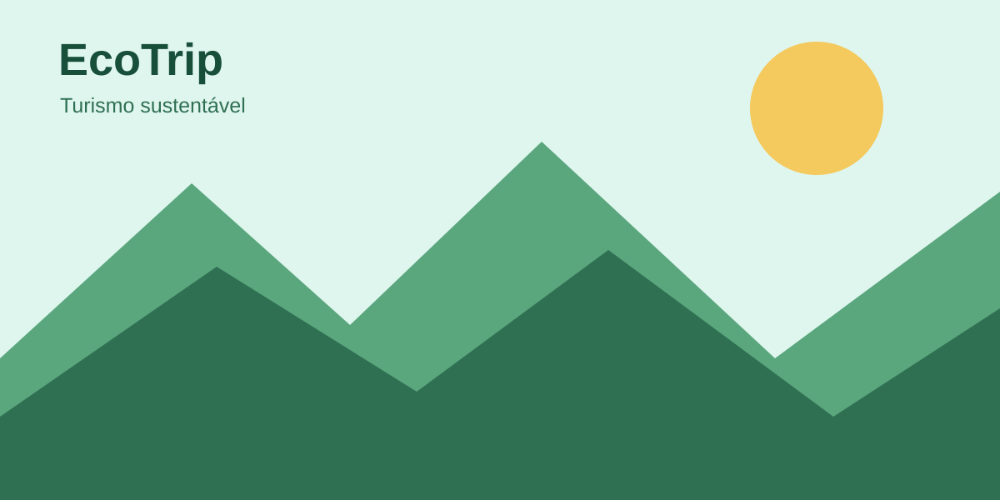

EcoTrip — Turismo Sustentável
Um guia digital para descobrir destinos e experiências de viagem valorizando a natureza e as comunidades locais.
Destinos e experiências

- Ecoturismo e trilhas
- Litoral consciente
- Cultura e comércio local
Exemplos de destinos brasileiros
| Destino | Estado | Tipo de experiência |
|---|---|---|
| Parque Nacional da Tijuca | RJ | Natureza e trilhas |
| Parque Nacional dos Lençóis Maranhenses | MA | Paisagem e ecoturismo |
| Parque Nacional do Iguaçu | PR | Cachoeiras e natureza |